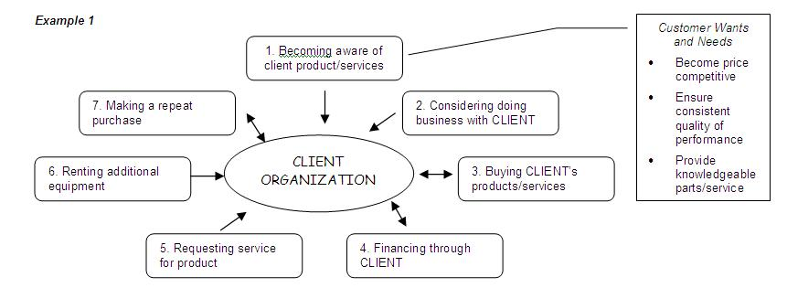
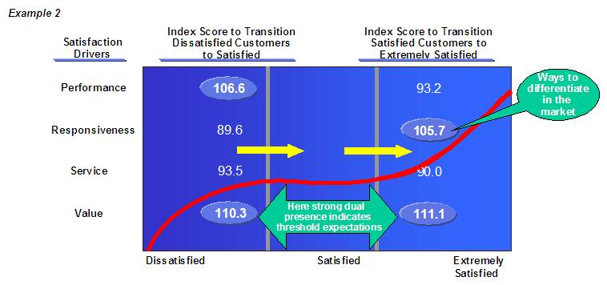
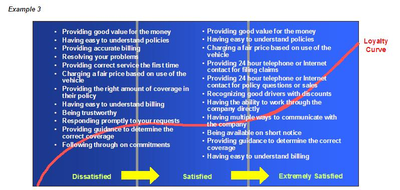
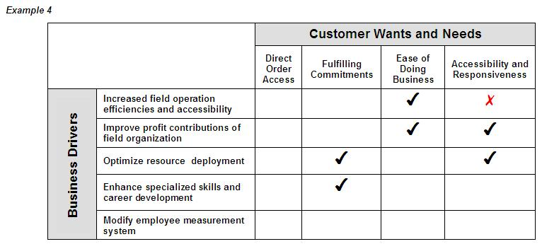

The chart below (Example 1) shows the various interactions a customer might have with the respective client. The
callout box shows the Customer Wants and Needs, which correspond with that particular touchpoint.

Example 2 is a quantitative representation of how impactful four wants and needs are to increasing customers’ loyalty.
(In this example, the scores have been indexed; any score that is more than 10 points greater or less than the norm of
100 is extremely impactful. It is evident from examining the relative index of the scores, that certain wants and needs
are more or less impactful in moving customers at specific points on the loyalty curve). The set of scores on the left
indicates the strength of the want/need to transition customers from dissatisfied to satisfied; the two which are
influential in moving customers up this end of the loyalty curve (Performance and, particularly, Value) would be
considered Basics. The relatively strong score on the right for Responsiveness indicates the strength of the want/need
to move customers from satisfied to extremely satisfied – thus, it is an Attractor or Differentiator. However, the even
higher score for Value indicates that it is also an Attractor. Apparently there is a basic level of value expected, but
the client can also differentiate itself by delivering significant value to the customer.
The consultant who created this example added some comments interpreting the significance of the scores for this
client.

Example 3 is a variation, which enables the practitioner the note specific wants and needs that are associated with
improving customers’ satisfaction and loyalty.

The fourth example shows the mapping of customer wants and needs to the key drivers of the client’s business. This
chart clearly indicates where the various wants and needs align with business goals, and where they do not.

|